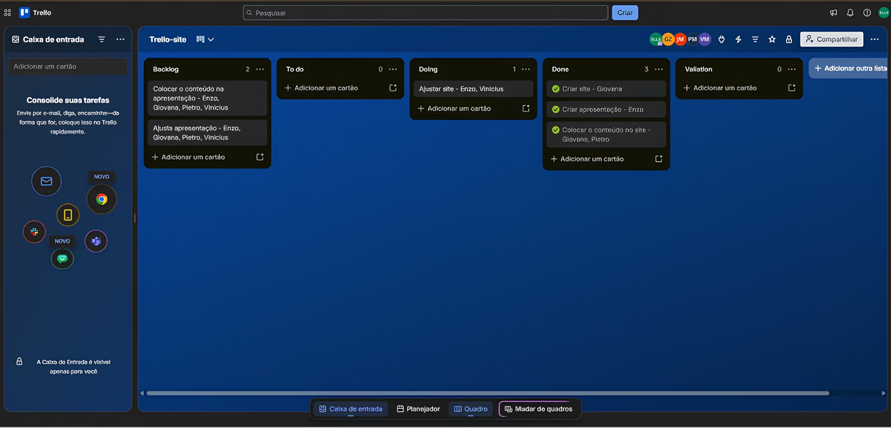

01
Planejamento
A equipe define o objetivo da Sprint e escolhe as tarefas que pretende realizar durante o ciclo.
A gestão de projetos envolve o planejamento, a organização e o acompanhamento das atividades necessárias para alcançar um objetivo. Na automação industrial, ela ajuda a coordenar equipes, equipamentos, prazos e entregas.
O Scrum organiza o trabalho em ciclos curtos, enquanto o Trello permite organizar visualmente as tarefas e acompanhar o andamento do projeto.

O Scrum é um framework de trabalho ágil que organiza o desenvolvimento em ciclos chamados Sprints. A equipe planeja, executa e avalia o trabalho ao longo desses ciclos, entregando partes do projeto progressivamente.
A equipe define o objetivo da Sprint e escolhe as tarefas que pretende realizar durante o ciclo.
É o período em que a equipe desenvolve e uma parte do projeto. Geralmente dura de uma a quatro semanas.
Reunião diária de até 15 minutos para acompanhar o progresso e identificar dificuldades.
A equipe apresenta o resultado da Sprint e identifica melhorias para os próximos ciclos.

O Scrum pode ser utilizado no desenvolvimento da lógica de um CLP ou na criação das telas de um sistema SCADA. A equipe pode planejar uma função, programá-la, testá-la e apresentar o resultado.
Dessa forma, o cliente pode acompanhar versões funcionais do sistema e sugerir mudanças durante o desenvolvimento.
As reuniões também ajudam a identificar dificuldades, como a falta de ferramentas, materiais ou informações.
O Trello é uma ferramenta de gestão visual que utiliza quadros, listas e cartões para organizar tarefas. As listas podem representar etapas como "A Fazer", "Em Progresso" e "Concluído".
Representa um projeto ou uma área de trabalho e reúne as atividades relacionadas.
Organizam as tarefas conforme seu estado, como pendentes, em andamento ou concluídas.
Representam tarefas e podem conter descrições, anexos, prazos e listas de verificação.
Permite atribuir responsáveis e compartilhar informações entre os integrantes.
Na automação industrial, o Trello pode ajudar a organizar a instalação de uma máquina, a montagem de um painel elétrico ou o desenvolvimento de um sistema supervisório.
Uma tarefa como "Ligar cabos do Motor 1" pode receber um responsável, uma data de entrega, instruções e diagramas elétricos anexados.
Assim, técnicos e engenheiros conseguem acompanhar o andamento das atividades e identificar o que ainda precisa ser feito.


Imagine uma equipe que precisa desenvolver um sistema supervisório para uma máquina industrial. Primeiro, ela utiliza o Scrum para definir o objetivo da Sprint e selecionar as tarefas.
Depois, organiza essas tarefas no Trello, separando as atividades em listas como "A Fazer", "Em Progresso" e "Concluído".
O Scrum orienta o planejamento e os ciclos de trabalho, enquanto o Trello facilita a visualização das tarefas, dos responsáveis e do progresso do projeto.
A combinação entre planejamento, entregas frequentes e acompanhamento visual ajuda a equipe a distribuir tarefas, identificar problemas e acompanhar o progresso dos projetosde automação industrial.
